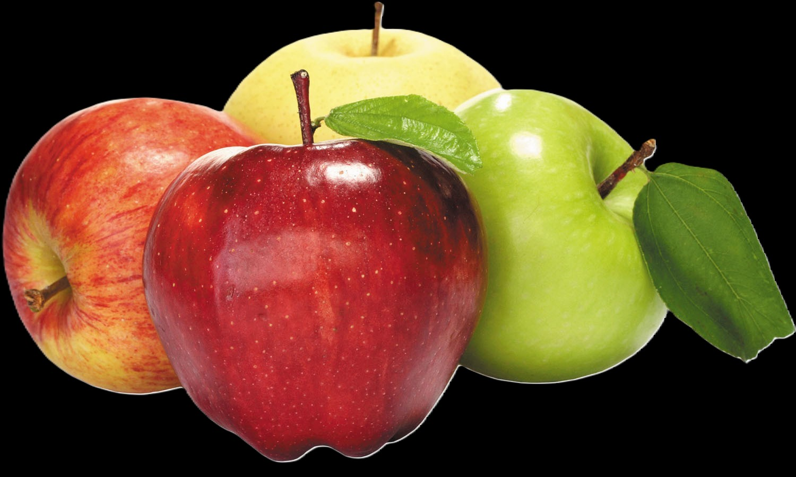

An apple a day keeps the doctor away.’ The age old adage truly reflects the many health benefits apples present to us. Apples are considered to be one of the healthiest and most popular fruits. Here are some of the amazing benefits of making apples a part of our regular diet.
Mango
Mangoes, also known as the king of fruits, are loved by many for their sweet taste. The benefits of mangoes can be attributed to their nutrient-rich profile. These fruits have been cultivated for centuries and are native to southeast Asia. They belong to the drupe family. Mangoes are one of the most nutrient-dense fruits and contain 20 different vitamins and minerals. They are available in different colors and varieties.
Banana
Bananas are one of the most beloved fruits in the United States. With their affordable pricing, year-round availability, and numerous health benefits, it’s no wonder they are a staple in so many households. This versatile fruit can be enjoyed on its own or used in a variety of recipes, from sweet smoothies to cakes, breads and more. But it’s not just their taste that makes bananas so popular – they are packed with important nutrients like fiber, vitamins, and minerals that are essential for a healthy diet. In fact, according to The Packer’s Fresh Trends, bananas are the most commonly sold fruit in the United States1. In this blog post, we’ll explore the many reasons why bananas are such a nutritious and healthy food.
Despite its numerous health benefits, there have been various claims suggesting that bananas can cause weight gain and constipation, but this is a common misconception. Bananas are actually low in calories and high in fiber, which can aid in digestion and help to promote feelings of fullness. However, they are relatively high in carbohydrates and natural sugars, which can lead to weight gain if consumed in excess.
Grapes
Grapes offer health benefits, primarily due to their high nutrient and antioxidant content. They may benefit the eye, heart, bones, and more.
Grapes are high in several important nutrients. Just 1 cup (151 grams) of red or green grapes provides:
Calories: 104
Carbs: 27 grams
Protein: 1 gram
Fat: 0.2 grams
Fiber: 1.4 grams
Copper: 21% of the daily value (DV)
Vitamin K: 18% of the DV
Thiamine (vitamin B1): 9% of the DV
Riboflavin (vitamin B2): 8% of the DV
Vitamin B6: 8% of the DV
Potassium: 6% of the DV
Vitamin C: 5% of the DV
Manganese: 5% of the DV
Vitamin E: 2% of the DV
Watermelon
Watermelon is an amazing hydrating fruit as it contains 92% of water and is enriched with minerals and vitamins. Its seeds are super-rich in various nutrients. These seeds have a low-calorie count and are rich in micronutrients like zinc, magnesium, potassium, etc. Watermelon seeds boost immunity and heart health and help to control blood sugar levels.